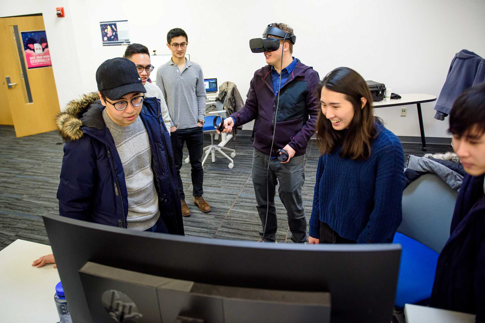

Why the Work Starts Before the Project
Engaged learning at UMSI is fundamentally different from traditional classroom assignments. You are stepping out of controlled environments and into complex, unscripted ecosystems where technical solutions intersect with human lives, organizational cultures, and real community needs.
The initial phase of a project is rarely about jumping straight into execution—it is about building the foundation for ethical, sustainable engagement. Taking time to reflect on your own positionality, audit your team’s collective skills, and listen deeply to your partner’s goals prevents project failure down the line. When you ground your project in mutual respect, clear boundaries, and honest communication from Day 1, you transform a simple class deliverable into a reciprocal partnership that creates authentic value for everyone involved.

Phase 1: Preparing for the Experience
Before creating a solution, take time to understand the context, evaluate your team's readiness, and identify what you still need to learn.
Approach the Work as a Collaborative Learner
Before writing code, sketching wireframes, or analyzing data, consider how your identity and previous experiences influence the way you understand the project.
Your role is not to enter an organization or community as an outside expert who will fix a problem. Your role is to listen, ask questions, contribute your developing expertise, and work alongside people who understand their organization and community.
Preparation Goals
- Develop social and community awareness: Examine your identity, positionality, assumptions, and privileges. Learn about the community's history and consider how power may affect participation and decision-making.
- Understand expectations: Review program requirements, project commitments, leadership responsibilities, deadlines, and expected outcomes before beginning the work.
- Assess team readiness: Identify each team member's skills, interests, availability, responsibilities, and learning goals. Determine where the team may need additional knowledge or support.
- Begin project scoping: Learn about the organization's needs, intended users, constraints, and desired outcomes before committing to a solution.

Questions to Consider
- What do I hope to learn from this experience?
- Who will be affected by the project and its outcomes?
- What assumptions am I making about the partner, community, or project?
- What knowledge and skills does my team already have?
- What knowledge or perspectives are missing from our team?
- How will the partner participate in project decisions?
- What would a mutually beneficial outcome look like?
Recommended Preparation Process
- Reflect on your position: Identify the experiences, identities, assumptions, and areas of privilege that may shape your approach.
- Learn about the context: Research the organization, community, project history, affected stakeholders, and broader social conditions.
- Set learning goals: Record the technical, professional, interpersonal, and ethical skills you want to develop.
- Review team capacity: Compare the team's skills and availability with the likely needs of the project.
- Identify open questions: Write down what your team needs to learn from the partner before confirming the project's scope, methods, or deliverables.
Featured Preparation Resources